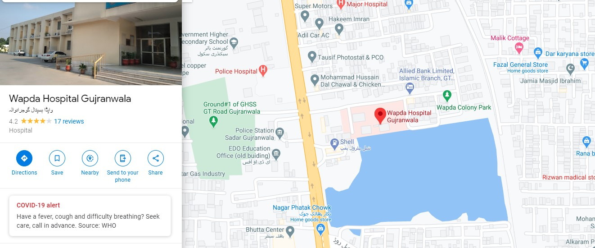
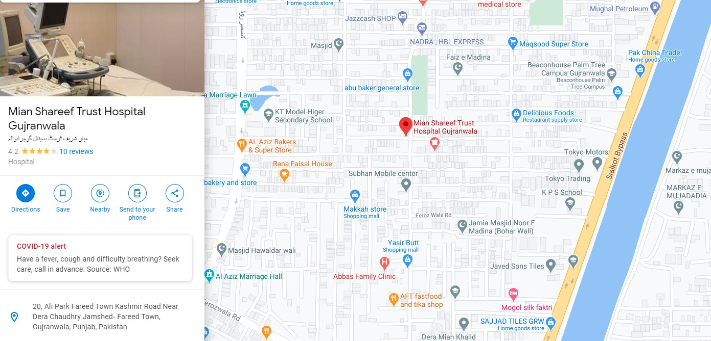

Profile
Dr. Zara Maqsoob is practicing in Gujranwala. She is among the best Gynecologists in Gujranwala providing services including infertility treatment , Laproscopy, Epidural Anagesia, Painless Delivery and Hysteroscopy. She has an experience of over 10 years in this field. She did her BSc. from Punjab University,Lahore then MBBS from Alama Iqbal Medical College,Lahore. FCPS(Obstetrics & Gynecology) from Fellow of College of Physicians & surgeons Pakistan.
Services
- PCO
- Amenorrhea(missed period)
- STD
- Contraception advice
- Painless Delivery
- C-Section
- Antenatal
- Pap Smear
- Infertility
- IUCD / Mirena / Implanon placement
- Epidural Analgesia
- Postmenopausal Bleeding
- Harmone Disorder
- Pregnancy with complications
Education
- BSc. : Punjab University, Lahore
- MBBS : Allama Iqbal Medical College, Lahore
- FCPS : College of Phsicians & Surgeons(CPSP), Pakistan
Experience
- Ex Gynaecologist at Jinnah Hospital, Lahore
- Ex Gynaecologist at GMC/DHQ Teaching Hospital, Gujranwala
Practice Locations
-
Wapda Hospital, Gujranwala
 -
Mian Shrif Trust Hospital,Gujranwala
 -
www.Marham.pk